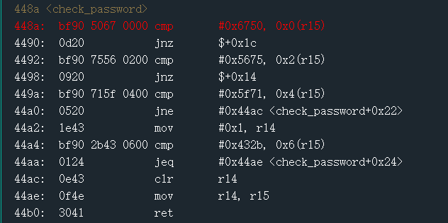
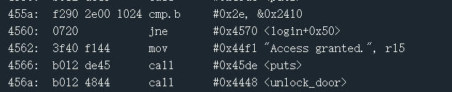
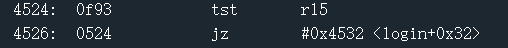
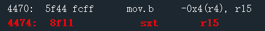
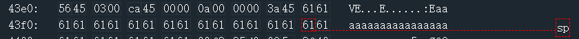
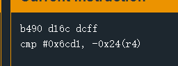
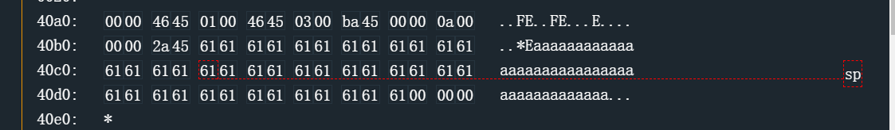
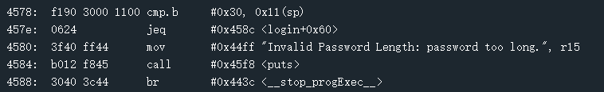
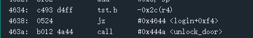

microcorruption
前两题忘记记下来了，反正很容易就不写了
Sydney

这里是逐一比较，一开始按照顺序来写不对，卡了一下，看了题解应该是数据存储应该是高位在后面，就是要6750倒过来写5067，很容易忘记的基础知识点了orz。
Hanoi

这里是要比较0x2e和0x2410地址里的东西是否一样，一样就可以过，前面可以随便填
Cusco

不能让r15=0，就往前面函数看看

不管前面输入什么，到这两句r15都会变为0，因此不能单纯靠写答案过这题，看了看题解应该是要用栈溢出来操作。

当执行到login函数的ret指令时，sp处于我们可以覆盖的位置，因此可以把这个位置写成我们需要跳转的地址
Reykjavik
照例输入aaaaaaaaaaaa运行一下，当sp运行到password开始的地方，留意汇编指令

这里需要比较0x6cd1和0x43fe-0x24=0x43da的内容，也就是password的第一组数字，因此password先直接输d16c，然后就发现过了。
其实这一题做的时候并没有这么简单，当时是发现了程序的汇编码在内存里面，只能一条一条去看，并且看见enc的函数名，以为是要一条一条解密的，后来实在撂不清2400后面的程序整个的逻辑，去找了题解顺着做才发现这条重要指令，对汇编指令还是不够敏感，还得继续努力orz。
Whitehorse
这道题出现栈溢出的地方是程序最后的ret那里

因为之前习惯于在最后判定结果前找漏洞，找这个ret找了很久，最后是在栈溢出的地方填需要跳转的地址，这里没有unlock函数，但是在conditional_xxx函数里有一个call
Montevideo
跟上一题是一模一样的。
Johannesburg

这里是一个cananry，因此sp+11地址的值应该等于30，才能绕过，同时填充我们要的返回地址0x4446就行。
Santa Cruz

这里不能使之为0，一步一步推。
本博客所有文章除特别声明外，均采用 CC BY-SA 4.0 协议 ，转载请注明出处！